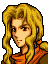
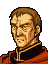

Narration
As ages passed and the 12 Crusaders
became the talk of legends, a great
rebellion arose and spread throughout
the Land of Jugdral.
十二聖戦士が伝説になったころ
ユグドラル大陸全土に及ぶ大乱が起こった
While on the march through the Yied
Desert, Cuan and Ethlin are
suddenly attacked by the Thracian army and
die far from their homeland.
イードを行軍中、トラキア軍の奇襲を受け
砂漠に散ったキュアンとエスリン
Though King Lenster fights valiantly
while grieving the loss of his sons
he, too, meets a bitter end betrayed by
his allies the Conote army.
息子たちの悲劇を胸に戦うレンスター王だが
友軍コノートの裏切りで無念の最期をとげる
The entire army of Thracia seizes upon thischance
and assaults Lenster's Castle.
トラキアは全軍をもってレンスター城を襲撃
As Lenster's army fights bravely in the faceof merciless
defeat one young knight, Fin, escapes
with Prince Leaf, Lenster's infant grandson.
善戦むなしく城から落ちるレンスター軍
若き騎士に抱かれた王子の姿もそこにあった
As Leaf gazes up at the castle cradled inFin's arms can
he even begin to understand the
terrible sight that meets his eyes?
フィンの腕のなかで城を見つめるリーフ
はたしてその瞳に映ったものは・・・
13 years later...
(13 years later)
Osian and Halvan's training scene
勝負だ、ハルヴァン！
なかなかやるな
だが、まだまだ！
Scene 1
おやじ、もうはじまってるよ
こいつはいかん
いくらエーヴェルでも
帝国兵が相手では・・・いそぐぞ
まいったなぁ、もう・・・
Scene 2

エーヴェル！
村がおそわれている！

リフィス団ね
やつら
しばらくおとなしくしていたのに・・・
ほうっておけない
村をたすけよう！
Scene 3

ワイズマン
この村にまちがいないのだな

はっ
まちがいありません
よし、ゆけ！
必ず王子を捕えるのだ！